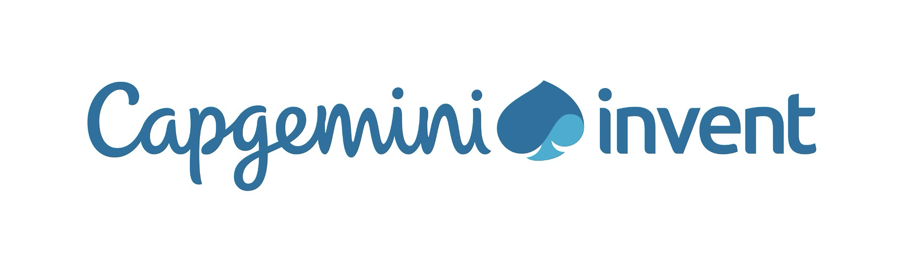
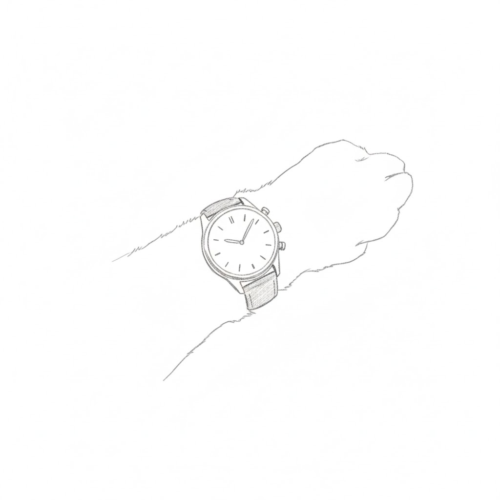
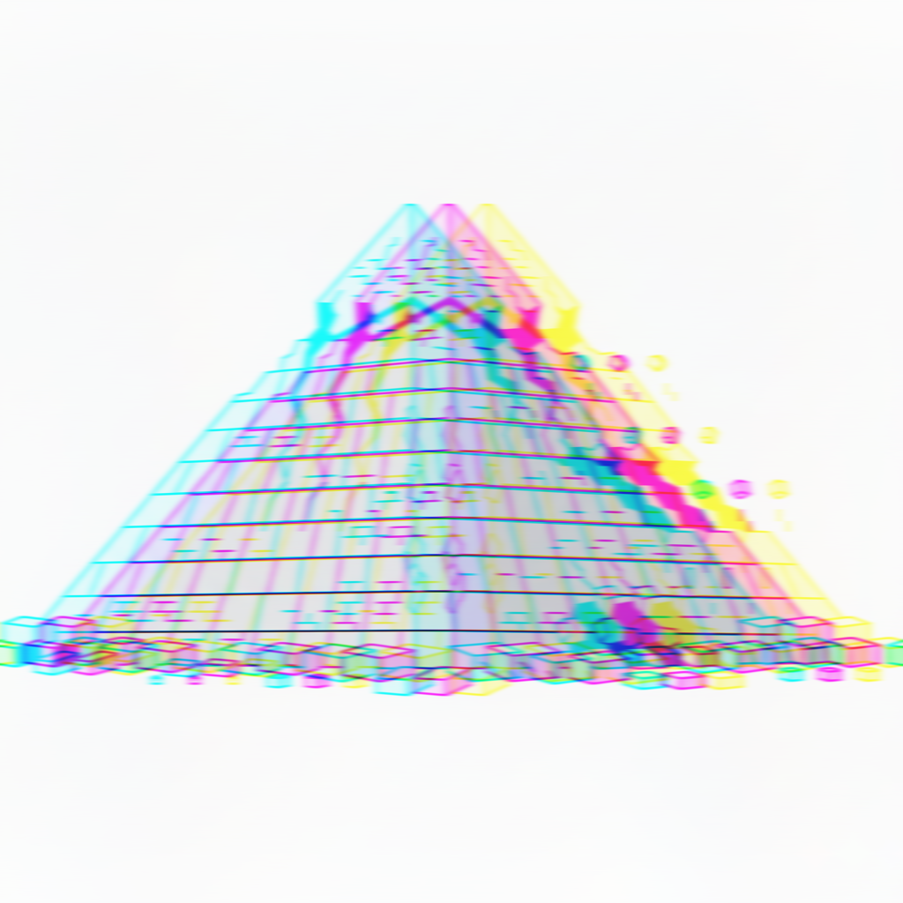
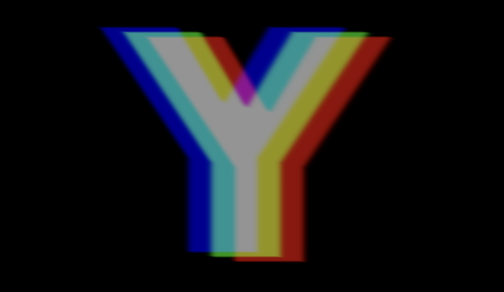
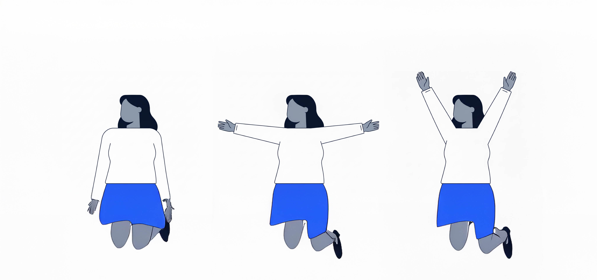
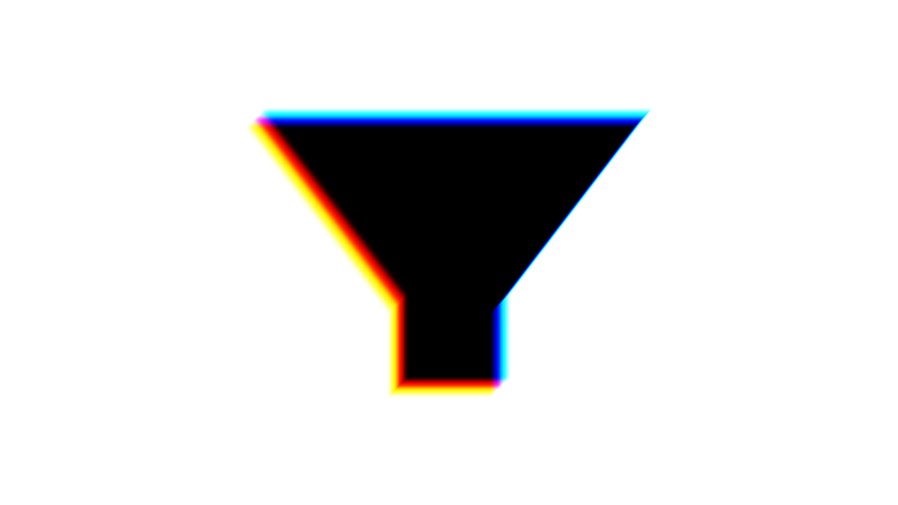
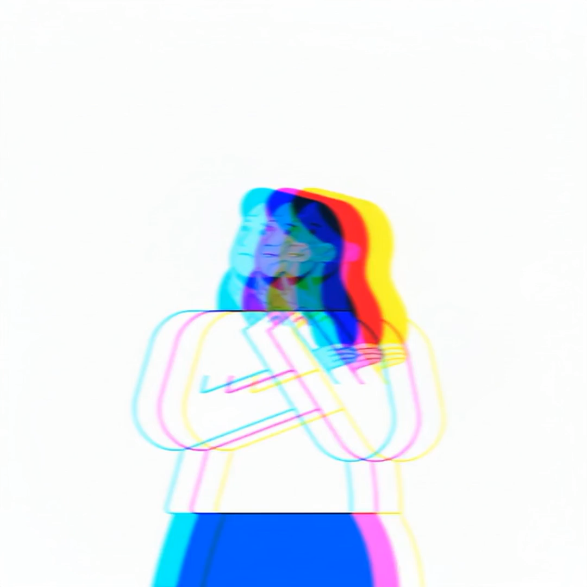

State Council guideline: expand AI across research, industry, public services, and governance.

This is where the friction lives.
| Business ritual | Human time | AI time |
|---|---|---|
| Sprint | 2 weeks | 2 days |
| Quarterly review | 3 months | ~2 weeks |
| Annual budget | 1 year | ~7 weeks |
| 3-year strategy | 3 years | ~5 months |
Your sprint is a weekend. Your strategy covers one summer.
Free for all 21,000 students, faculty, and staff via Google Workspace for Education
Your research department
Your autonomous analyst
Your Socratic tutor
The pyramids are crumbling

A first-year with Deep Research produces third-year output. But the judgment is still years away.
When AI becomes the default study partner, who teaches you to ask the right questions?
When every deliverable looks polished, how do you prove substance behind the surface?
If everyone outsources their part to AI, the group project dies. Collaboration requires friction.
The shape of craft to come


The New Professional Genome

Deep AI-human fusion where craft and judgment get amplified, not replaced.
Where interplay with adjacent crafts happens. Walls are thinner, rules are rewritten.

Two things to do this week
This deck lives at bi.btrbot.com